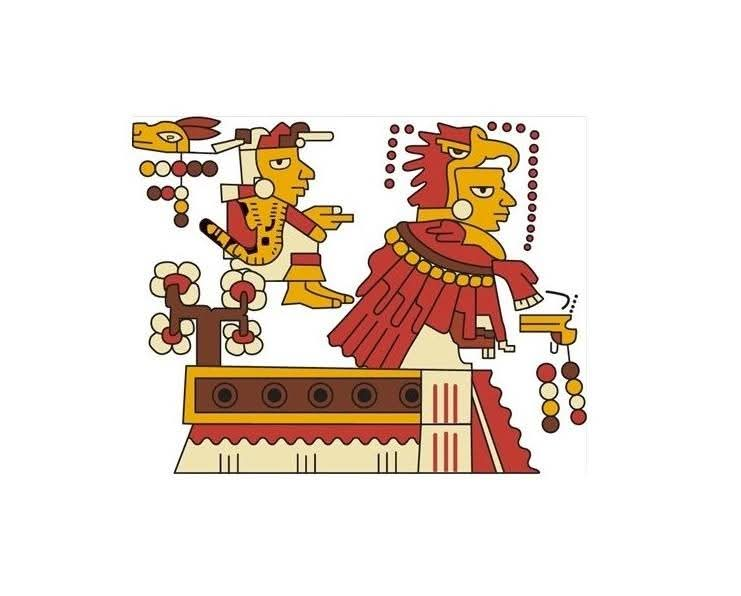

La comunidad de Santa Maria Suchixtlan es sumamente antigua, ya que se menciona de ella en algunos codices como es el codice Selden en donde se hace referencia a ella con el nombre de "Chiyo yuu" el cual es de origen mixteco y se traduce al español como lugar de flores o altar de flores blancas. El glifo con el cual se menciona es el siguiente
